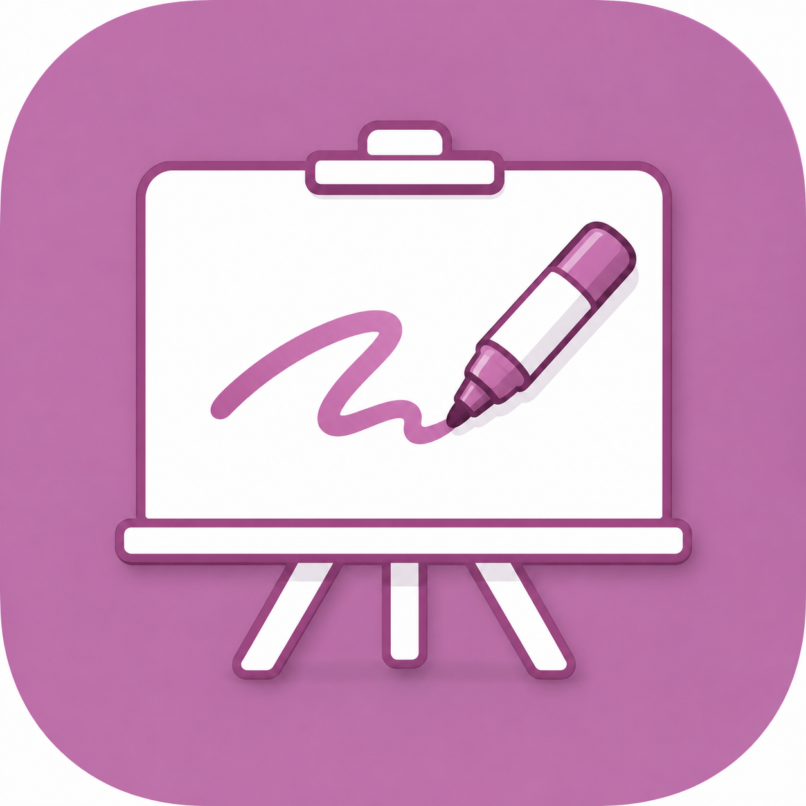
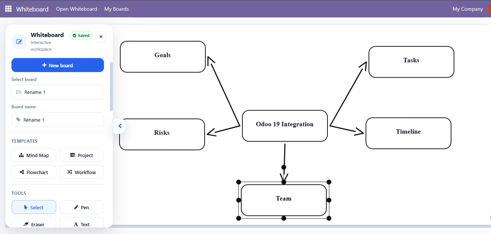
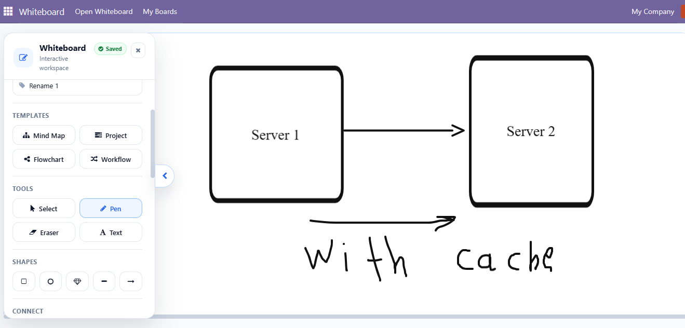
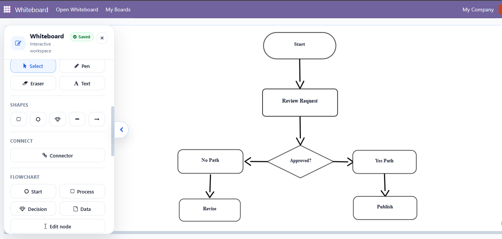
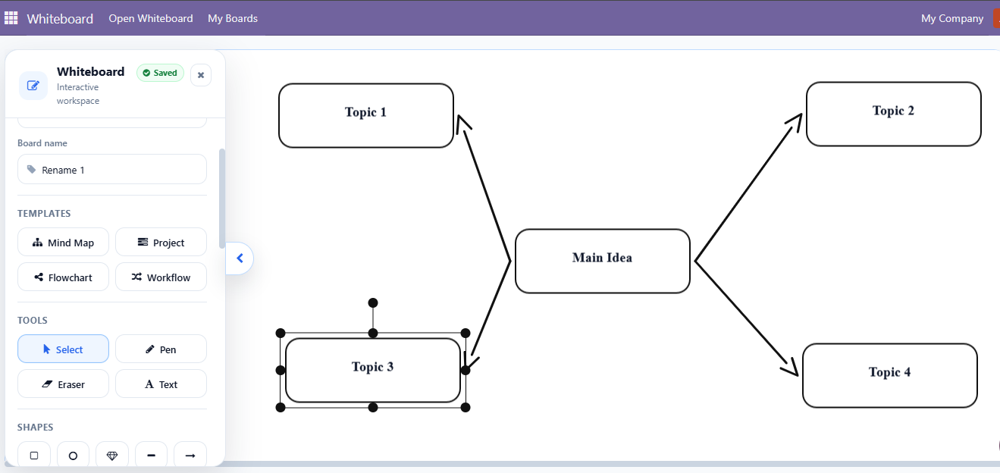
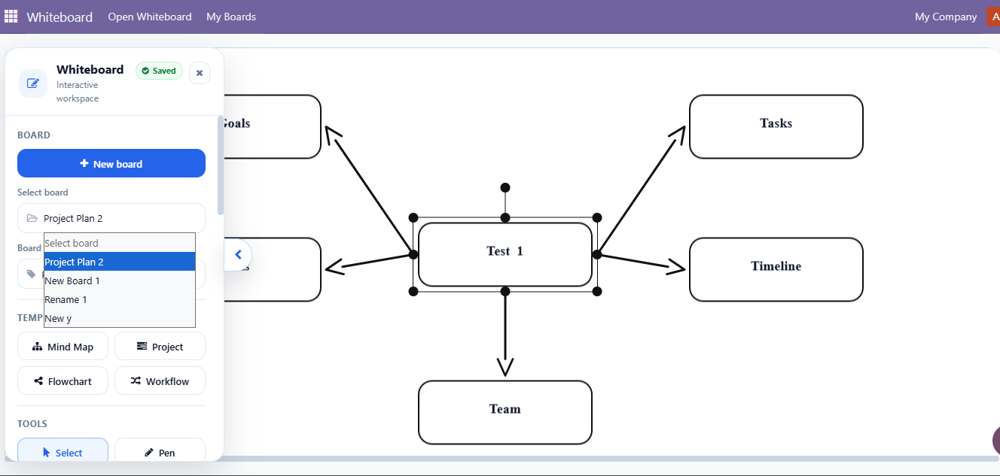
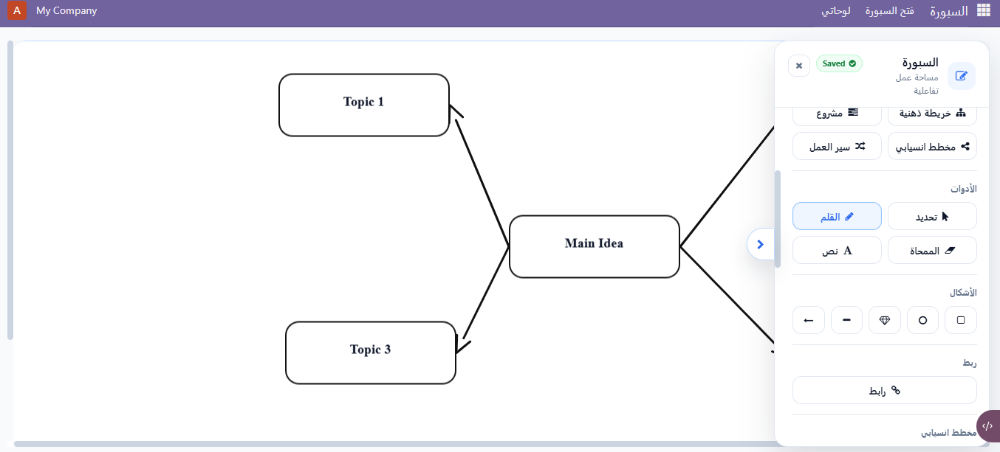

A secure, responsive, multi-board whiteboard built directly for Odoo. Create diagrams, workflows, mind maps, sketches, and planning boards without leaving your Odoo workspace.
Also available for Odoo 17 and Odoo 19.

Build whiteboards without leaving your Odoo workspace. Combine freehand drawing, text, shapes, arrows, connectors, flowcharts, mind maps, and reusable templates in one interface.


Create clear process diagrams with flowchart nodes, directional arrows, and connectors that remain attached while objects are moved.
Use the board for process documentation, product planning, workshops, system design, and internal collaboration.
Start from a reusable mind-map template or create a custom structure. Arrange goals, risks, timelines, teams, and ideas in a visual format that is easy to understand.

Create and switch between multiple boards with paginated loading.
Manual saving, autosave, unsaved-change protection, and conflict detection are built in.
Byte-bounded history protects browser memory while preserving a practical editing workflow.

The interface includes responsive layout support for different screen sizes and right-to-left language support.

Internal users can access only their own boards. Client-supplied ownership, company, and revision values are ignored.
Multi-tab conflicts are detected before newer content can be overwritten by an outdated save.
Canvas JSON, board names, identifiers, object counts, thumbnails, and resource limits are validated before storage. Duplicate active board names are also prevented.
Failed saves preserve unsaved work, invalid incoming boards do not replace the current canvas, and thumbnail failures do not block board saving.
| Save | Ctrl/Cmd + S |
|---|---|
| Undo | Ctrl/Cmd + Z |
| Redo | Ctrl/Cmd + Shift + Z or Ctrl/Cmd + Y |
| Delete selected object | Delete or Backspace |
| Cancel current mode | Escape |
Whiteboard is actively maintained for multiple Odoo releases. Choose the module package that matches your Odoo installation.
The module does not require a runtime CDN connection.
odoo_whiteboard folder into an Odoo addons path.Whiteboard is released under the LGPL-3 license.
Current release: 18.0.1.0.1